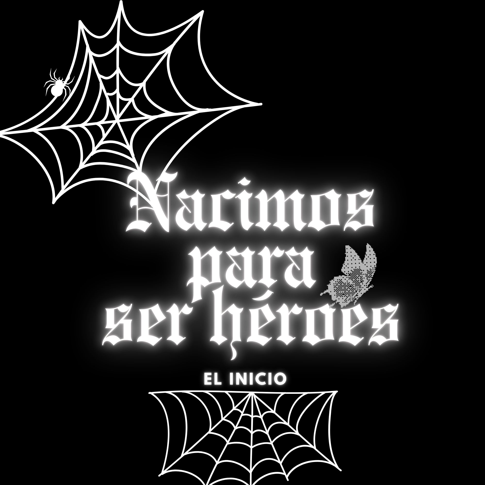
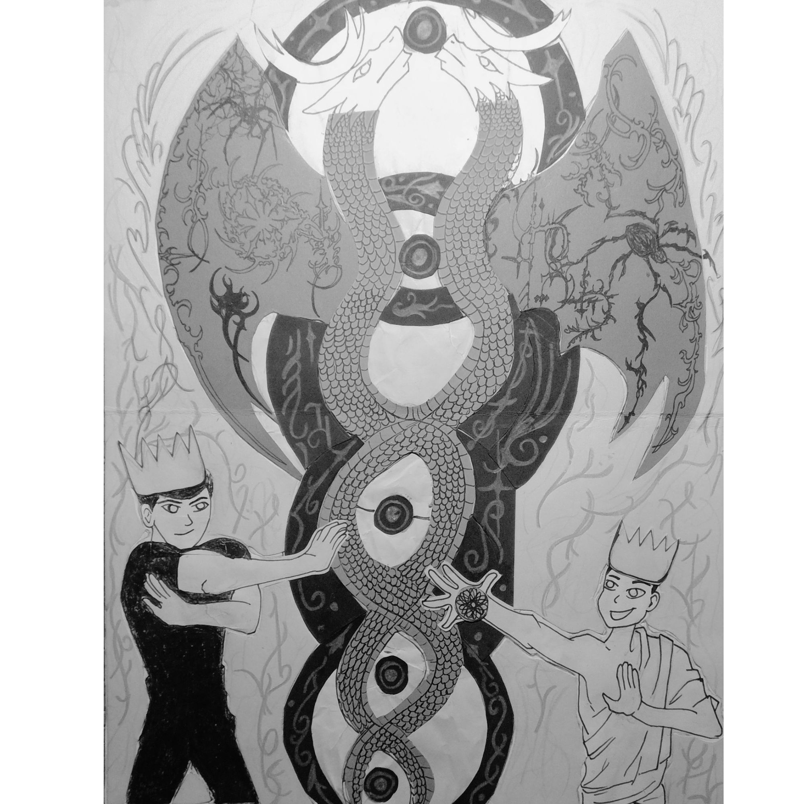
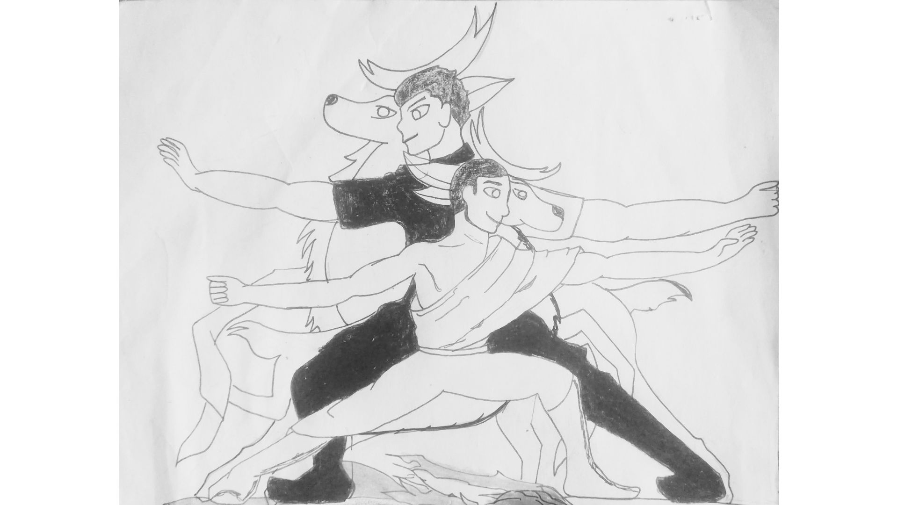
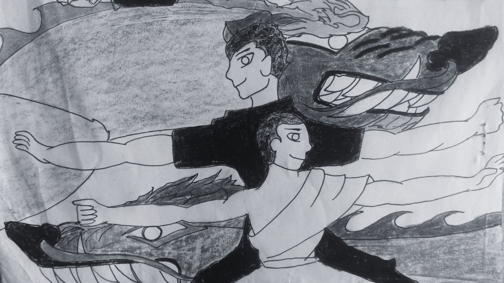
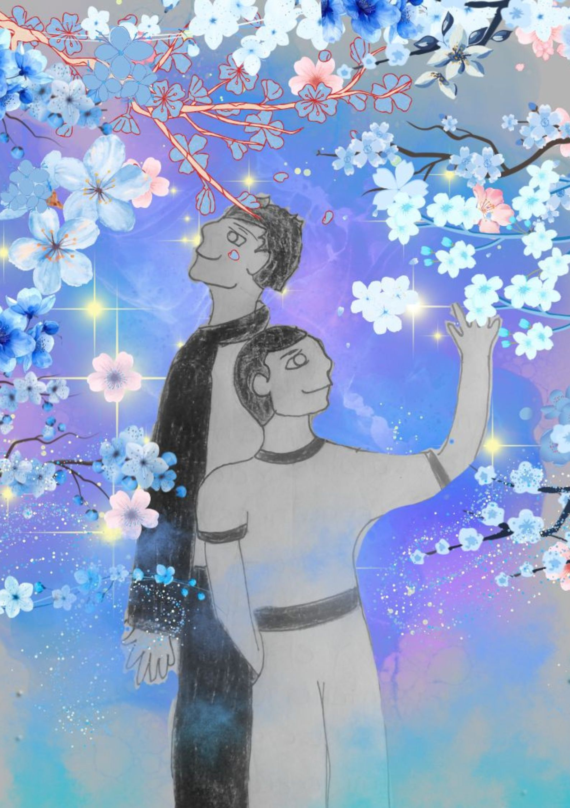
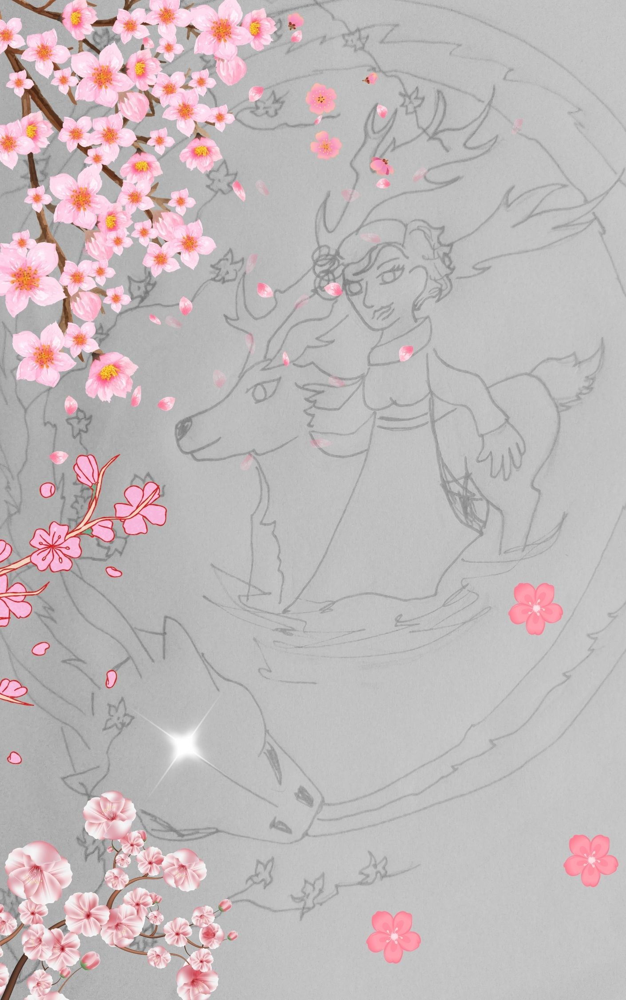
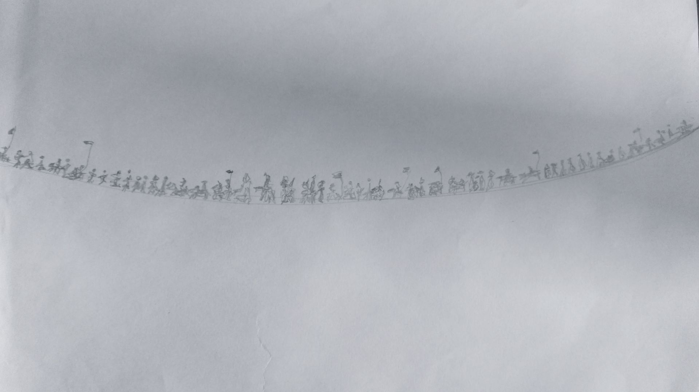
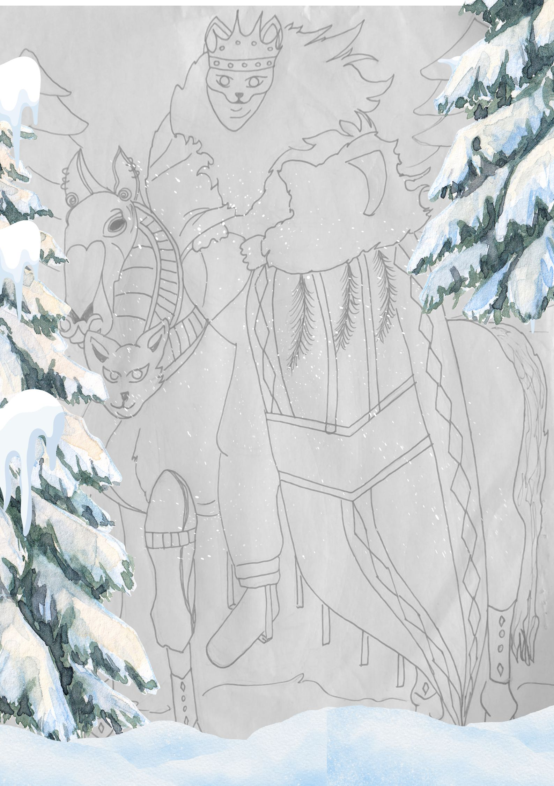
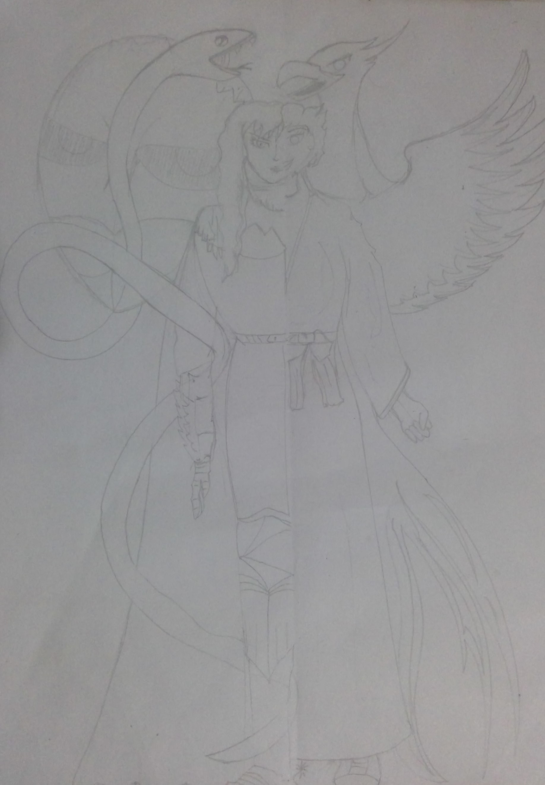

Toda historia tiene un inicio, pero hay relatos que se reinventan, que nacen en la claridad y no en la sombra. Son historias donde el héroe no es esclavo del dolor, sino guardián de la esperanza.
Damian no nació para ser víctima de la oscuridad, ni para obedecer rituales que lo encadenaran. Nació para ser rey, aunque aún era apenas un adolescente que buscaba comprender el peso de su destino. Sin embargo, las sombras de Krystal y el monstruo marino, sus enemigos, lo habían confundido, haciéndole creer que debía obedecer, cuando en verdad eran ellos quienes debían inclinarse ante él.
Krystal, como un espejismo, lo engañó con promesas falsas, intentando que Damian olvidara la luz que ardía en su corazón. Pero la verdad era que el amor es la única fuerza capaz de vencer al egoísmo y la manipulación. Y ese amor tenía un nombre: Dominic.
Al reencontrarse con su hermano, Damian comprendió que nunca podría ser rey sin él. Dominic era el tesoro más grande, la mitad que lo completaba, la razón por la cual debía luchar. Juntos no eran víctimas, sino héroes. Juntos eran invencibles. Por eso los habían separado: porque unidos, ningún enemigo podría doblegarlos.
Así comienza esta historia: la de un adolescente destinado a la corona, que descubre que el verdadero poder no nace de la soledad, sino de la unión con su hermano. Porque el destino no siempre se escribe en sangre; a veces se escribe en la luz de dos corazones que se reconocen como uno.




La purificación del alma, concebida como una secuencia de transformación consciente, no es un proceso que pueda apresurarse. Al contrario, exige paciencia, disciplina y motivación. Transmutar el espíritu en oro ha sido considerado, desde la antigüedad, uno de los ejercicios más arduos de la alquimia: el oro físico pertenece a los hombres, pero el oro del alma está reservado a los dioses.
Encontrar la felicidad no siempre es sencillo cuando la oscuridad del mundo parece interminable; sin embargo, mantener la calma en estados de desesperación es lo que nos convierte en una verdadera gema. Los hermanos y su madre no solamente habían hallado la luz a través de la felicidad, sino que también habían comprendido su verdadero valor.
Ellos no habían ofrecido sacrificios materiales, pero sí tenían una razón profunda para practicar la alquimia: recuperar a su madre. Pronto comprendieron que el camino hacia ella no se hallaba únicamente en la transmutación de lo físico, sino también en lo espiritual. Fue un recorrido difícil, marcado por la certeza de que los humanos jamás podremos descifrar por completo los designios de Dios ni los misterios de su plan.
La fuerza que los acompañaba era impresionante: al purificar su alma habían liberado una energía de protección, un regalo concedido por otros dioses. Estos sabían que su sabiduría y su fortaleza debían ser resguardadas, pues el conocimiento adquirido en ese viaje no era solo para ellos, sino para despertar a estas generaciones y a las que vendrán después.
Su madre que también practicaba la transmutación del alma desde hacía bastante tiempo; había recorrido el Camino de Santiago, había convertido su dolor en ceniza y hallado, al fin, la felicidad en medio de la oscuridad. En ese momento, su energía y la de sus hijos estaban más conectadas que nunca: todos habían sobrevivido de alguna manera gracias al conocimiento y la fuerza, pero sobretodo a la esperanza de volverse a encontrar.
El momento de reencontrarse se acercaba.El dragón guardián de su madre apareció mordiendo su propia cola en el agua, cerrando y abriendo ciclos. “Soy tu guardián”, le dijo. Ella sabía que este era el desenlace definitivo, y con la certeza de quien conoce su propósito, avanzó sin temor.

Las antiguas leyendas advertían que todo gran cambio comenzaba con una visión. A través del Ojo del Dragón, la madre contempló un futuro que nadie más podía ver: una inmensa legión avanzaba desde el horizonte. Sus estandartes oscurecían el cielo y sus pasos hacían temblar la tierra. No buscaban diálogo ni justicia; marchaban con un único propósito: conquistar el pueblo y apoderarse de todo cuanto sus habitantes habían protegido durante generaciones.
El silencio que siguió a la visión fue tan pesado como la propia amenaza. La madre comprendió que el tiempo de prepararse había terminado. Defender aquel hogar significaba honrar el sacrificio de sus antepasados, quienes durante años habían preservado la paz con esfuerzo y valentía. Sin embargo, también sabía que aquella carga no recaía únicamente sobre sus hombros. La fuerza del pueblo siempre había nacido de su unión. Si una vez habían logrado vencer la oscuridad, esta vez volverían a levantarse para escribir una nueva página de su historia.
Mientras la tensión crecía, una presencia desconocida emergió entre la nieve. El bosque permanecía inmóvil y el viento parecía pronunciar un nombre que nadie alcanzaba a comprender. Desde la fría neblina apareció un jinete envuelto en un largo abrigo de pieles, propio de las tierras donde el invierno jamás se retira. Su rostro permanecía oculto tras una enigmática máscara, y el elegante ornamento de su caballo revelaba un origen digno de la realeza.

Surgió desde el frío invernal como un fantasma, silencioso e imponente, hasta quedar frente a todos. Nadie supo de dónde había venido ni cuál era su verdadero propósito. ¿Era un rey? ¿Un guerrero de tierras lejanas? ¿O un viajero surgido de antiguas historias? Nadie conocía la respuesta. Sin embargo, en medio de la incertidumbre, todos comprendieron lo mismo: aquel misterioso caballero había llegado para luchar junto a ellos. La guerra ya no era una posibilidad. Era un destino que se acercaba con cada paso del enemigo. Pero también, la esperanza cabalgaba hacia el pueblo.
Krystal sabía que su momento había llegado, sabía que seguirse escondiendo no serviría de nada, puesto que todos los odds ahora estaban a favor de la madre. La razón era porque la madre había logrado expresar la verdad, y la verdad era que la madre era un águila, mientras que Krystal se escondía bajo el disfraz de halcón, pero en realidad era una serpiente.
La batalla final estaba por comenzar, y Krystal debía aparecer en el frente de la batalla, ya que era ella quien iba a dirigir a los falcons.
Krystal, que ya no tenía a dónde correr, sintió cómo su cuerpo se dividía internamente. Corrió hacia un espejo y notó que se veía diferente, pero no entendía qué estaba pasando. La maldición había terminado. Krystal estaba sola, y entonces entendió que sus poderes habían sido superados por la madre. No lo entendía del todo, pero quiso escuchar.
La madre, con su nuevo poder, se metió en la cabeza de Krystal y le dijo:
“¿Pensabas que la gente no se iba a dar cuenta de quién eras? No has hecho nada más que molestarnos a todos escondiéndote detrás de tu familia, pero ahora ellos te van a mandar al frente a ti. ¿Qué es lo que sientes al respecto?”
La madre continuó, con firmeza:
“Las personas antes no observaban porque no sabían o porque no entendían, pero ahora entienden, lo entienden todo. Saben que cada vez que dices que te hacen bullying es porque alguien se cansó de que los molestaras. Ahora actúan, ahora entienden, y ahora responden.”
“Antes nadie hacía eso porque los querías callados y ciegos, pero hasta un ciego puede entender y sentir la maldad mejor que cualquiera que ve.”
“Estás sola, al igual que yo, y es hora de que entiendas el mal que has hecho y de que pagues por haber torturado a mis hijos. Debes una gran cantidad de cosas que te has robado, y llegó la hora de devolverlas. Y la verdad no nos importa cómo lo hagas: si quieres pelear, pelearemos; si quieres hablar, hablaremos.”
“Pero vamos a estar ahí para recordarte que no te puedes salir con la tuya para siempre. El mundo está a punto de cambiar para bien, y toda la oscuridad, junto con tus amigos, va a ser borrada de la faz de la tierra.”
Krystal escuchó todo, sin poder escapar de esa presencia dentro de su mente, entendiendo que el control ya no era absoluto y que la realidad, por primera vez, estaba respondiendo.
